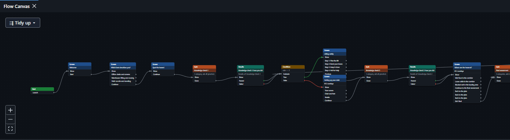
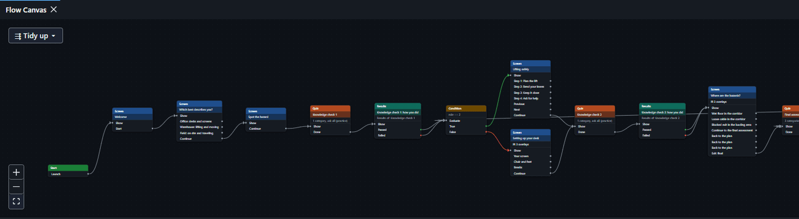
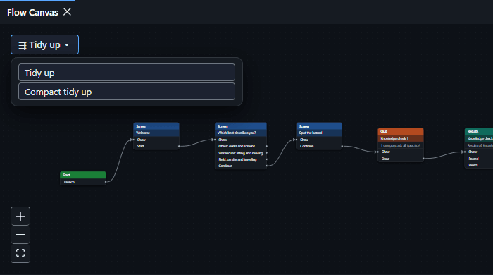
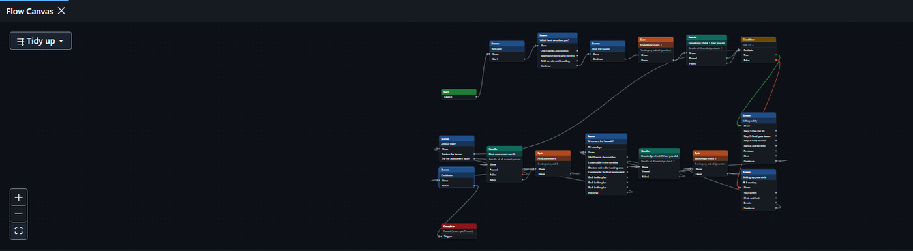

Tidy up the Flow Canvas
When the cards on the Flow Canvas get messy, press ⇶ Tidy up (top left of the canvas), or press Ctrl+K and type "tidy". The cards are arranged left to right: Start first, then each card to the right of the cards that lead to it. A condition's true branch sits above its false branch, and a wire that loops back is drawn backward without disturbing the order. Cards that are not wired to the main flow are placed in their own rows below it. Only positions change, never the wires or settings. Undo puts the cards back where they were.
Before: the Setting up your desk card sits on top of the Lifting safely card, and it is hard to see where the wires go:

After pressing Tidy up: Start is first, the true branch of the Condition sits above the false branch, and no cards overlap:

The ⇶ Tidy up ▾ button opens a short menu: Tidy up (the arrangement above) and Compact tidy up. Compact tidy up packs the cards closer and folds a long flow into rows that zig zag: the first row runs left to right, the next runs right to left underneath it, and so on. The end of one row sits above the start of the next, so the whole flow fits in a smaller space. A short flow stays in one row.
The menu that opens from the small arrow on the button:

After Compact tidy up: the first row of cards runs left to right and the second row runs back right to left underneath it:
